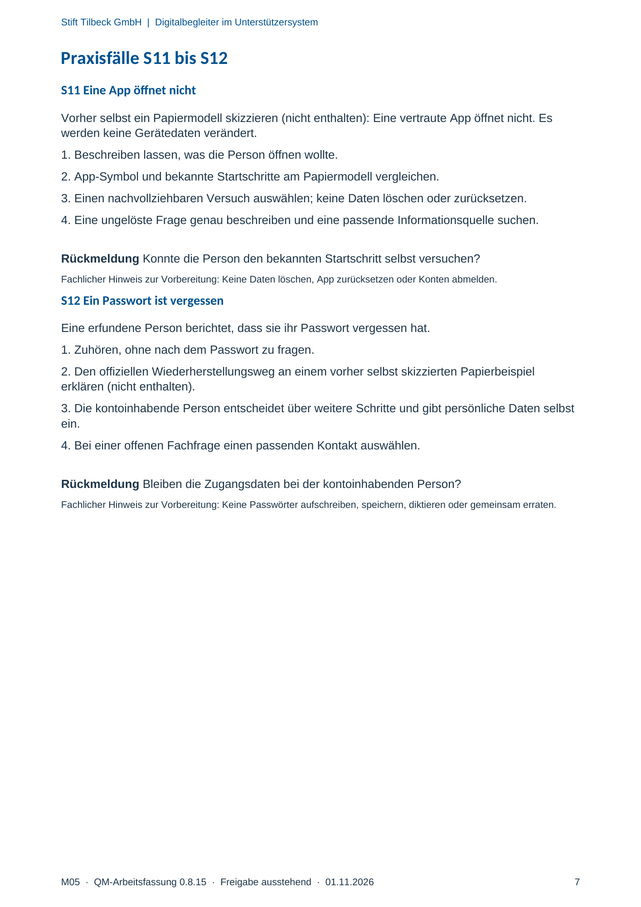

M05 · Originalseite 7
Eine App öffnet nicht
Original-Druckseite mit S11. Auf derselben Seite stehen außerdem S12. Diese sind dadurch keine zusätzliche Aufgabe.
Fragen und Ankreuzfelder werden auf dem Ausdruck bearbeitet. Die Lesefassung speichert keine Antworten.
Lesefassung · Seite 7
Stift Tilbeck GmbH | Digitalbegleiter im Unterstützersystem
Praxisfälle S11 bis S12
S11 Eine App öffnet nicht
Vorher selbst ein Papiermodell skizzieren (nicht enthalten): Eine vertraute App öffnet nicht. Es
werden keine Gerätedaten verändert.
1. Beschreiben lassen, was die Person öffnen wollte.
2. App-Symbol und bekannte Startschritte am Papiermodell vergleichen.
3. Einen nachvollziehbaren Versuch auswählen; keine Daten löschen oder zurücksetzen.
4. Eine ungelöste Frage genau beschreiben und eine passende Informationsquelle suchen.
Rückmeldung Konnte die Person den bekannten Startschritt selbst versuchen?
Fachlicher Hinweis zur Vorbereitung: Keine Daten löschen, App zurücksetzen oder Konten abmelden.
S12 Ein Passwort ist vergessen
Eine erfundene Person berichtet, dass sie ihr Passwort vergessen hat.
1. Zuhören, ohne nach dem Passwort zu fragen.
2. Den offiziellen Wiederherstellungsweg an einem vorher selbst skizzierten Papierbeispiel
erklären (nicht enthalten).
3. Die kontoinhabende Person entscheidet über weitere Schritte und gibt persönliche Daten selbst
ein.
4. Bei einer offenen Fachfrage einen passenden Kontakt auswählen.
Rückmeldung Bleiben die Zugangsdaten bei der kontoinhabenden Person?
Fachlicher Hinweis zur Vorbereitung: Keine Passwörter aufschreiben, speichern, diktieren oder gemeinsam erraten.
Originalseite ansehen
